Project 1: Image Filtering and Hybrid Images
Hybrid image of Heath Ledger and his ledgenary Joker.
The first project in CS 6476 is about Hybrid images. Hybrid images are created by adding (literally just summing up two images matrices, given that they are they same dimensions. Look to your right) two images, one of which has gone through a low-pass filter and one of which has gone through a high-pass filter.
What does an image filter do?
An image filter changes the appearance of an image by modifying values in the image matrix. Simple as that. In this project we use a low-pass filter which basically removes higher frequencies from images. The low-pass filters being used for this project have been created using a function called 'fspecial' in Matlab. This function creates a low-pass filter which mimics a Gaussian distribution given by the following formula,
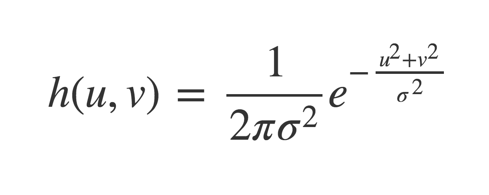As the image above illustrates, the Gaussian distribution decreases slowy from high intensity in the middle to lower intesities on the sides. When applied to an image, it blurs out the image, but slowly so that there are no hard edges to be seen. For example, look at the following natural and blurred images of the same image,
How do Hybrid Images work?
As per the paper at SIGGRAPH, a hybrid image combines the low-spatial frequencies of one image with the high spacial frequencies of another. This technique produces images which have two different interpertations subject to the viewing distance. Quoting the paper below,
"Hybrid images are based on the multiscale processing ofimages by the human visual system and are motivated by masking studies in visual perception. These images can be used to create compelling displays in which the image appears to change as the viewing distance changes."
Methodology used in this project
In this project we have setup the consturction of the Gaussian filter as follows,
cutoff_frequency = 5;
filter = fspecial('Gaussian', cutoff_frequency*4+1, cutoff_frequency);
This filter behaves differently for different pairs of images as we vary the value of the cut off frequency variable. Since, changing the value of the cutoff frequency not only changes the value of the sigma (standard deviation) of the fspecial function, it also increases the size of the filter matrix. Therefore, surface plot for even higher values looks pretty similar to the one showed above. The size of the filter matrix and sigma does, however, interact differntly with different images as we shall see below. This is because, larger filters have more of an effect on the images. A larger matrix will infer the value of each position in the image matrix from a larger neighbourhood and will have more of an effect. For instance, a larger Gaussian filter will blur out the image more than a smaller Gausian filter. Please see example below.
How were these images made?
So, as the name suggests, hybrid images are made by combining two images. One of these images is generated by applying the low-pass filter as shown in the Joker image above. The other is obtained by substracting the low-pass image from the actual image to obtain a high-pass image, as follows,
high_frequencies = image2 - my_imfilter(image2, filter);
| 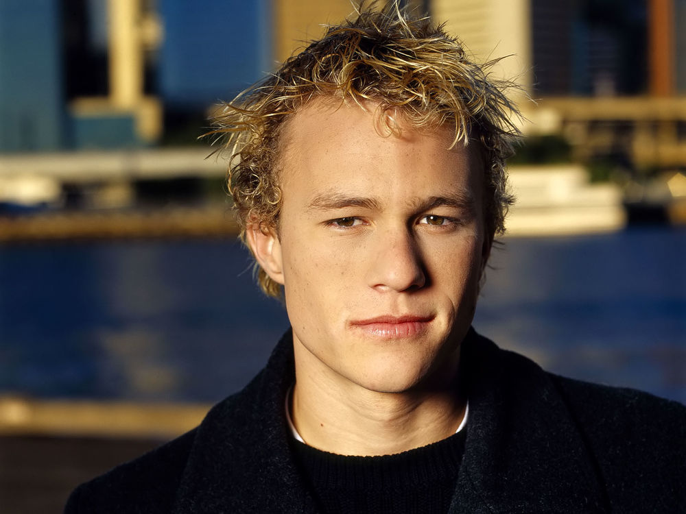 - = 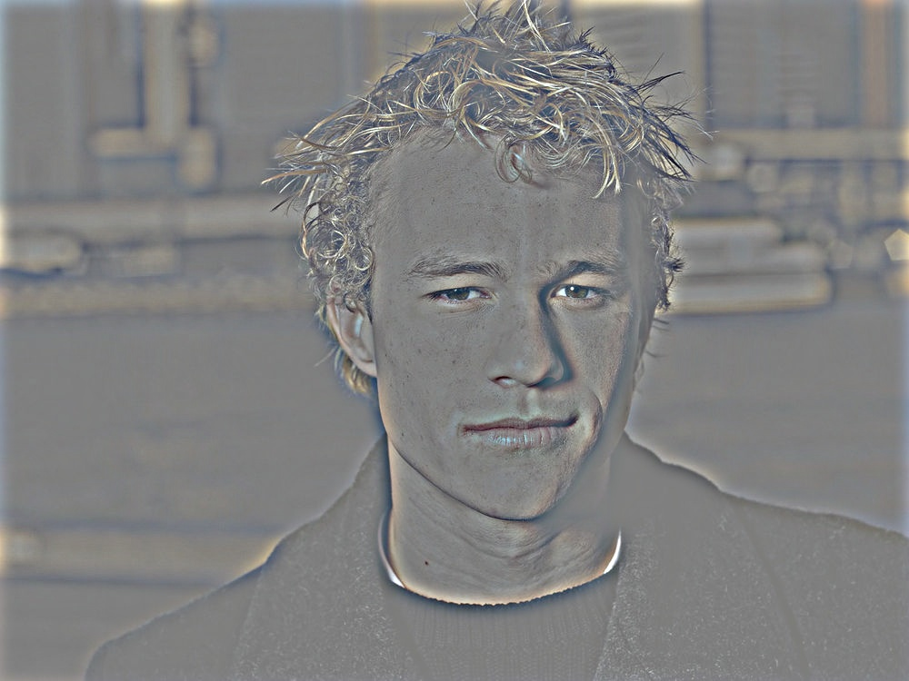 |
After we have both the high-frequency image and the low-frequency image, the hybrid image is just a sum of these two images,
hybrid_image = high_frequencies + low_frequencies;
| + = |
Optimizations to the my_imfilter()
First Version of my_imfilter()My first iteration of the my_imfilter had no optimizations. The running time was propotional to the dimensions of the image (height x width x channels) multiplied by the dimensions of the filter (height x width). The filter was applied by first padding the image with zeros in accordance with the size of the filter and then running a 3 level loop (one each for the three dimensions of the image) to obtain the sum of the dot product of a filter-sized segment of the image and the filter.
Second Version of my_imfilter()
After doing some research, I read about seprable filtering in this two part article (Part 1 and Part 2). This article explains that if the rank of any matrix is 1, then it can be split into a product of two vectors. The decomposition of the matrix can be done as follows,
% suppose filter is the Gaussian Filter
>> disp(rank(filter))
1
>> [U,S,V] = svd(filter);
>> v = U(:, 1) * sqrt(S(1,1));
>> h = V(:, 1)' * sqrt(S(1,1));
% v and h are the two vertical and horizontal vectors respectively.
The svd() function here is Single Value Decomposition function. The output of the function is such that, if
[U,S,V] = svd(X) then,
X = U*S*V'
Convolution (Correlation) is linear and associative, therefore
F*(A*B) = (F*A)*BThis fact gives us a computational advantage. Instead of multipling the image with a H(height) x W(width) matrix of the filter, we can now multiply it with two vectors, each of Hx1 and Wx1 dimensions. Therefore, the running time is now propotional to only (height x width x channels)x(H + W).
Improvement in the running time
disp(size(image1));
750 1000 3
disp(size(filter1));
57 57
tic;
my_imfilter_v1(image1, filter1);
toc;
Elapsed time is 180.067777 seconds
tic;
my_imfilter_v2(image1, filter1);
toc;
Elapsed time is 110.475859 seconds
Lets look at the results of this project
Heath/Joker
| 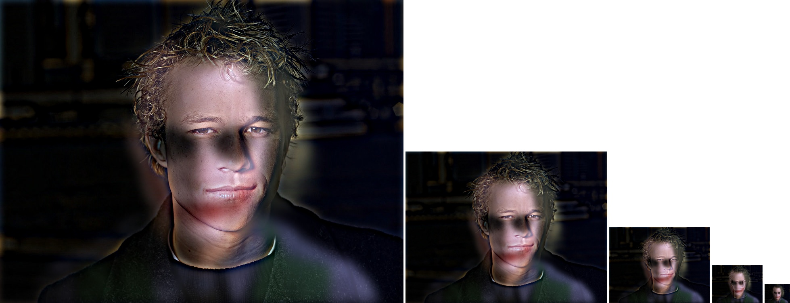 |
For this image, I actually used two different cutoff frequencies for each image. For the Heath Ledger image, the frequency used was - 9 and for the joker image the frequency used was -14. I felt that it was difficult to find a single cutoff frequency which worked with both images.
Fish/Submarine
| 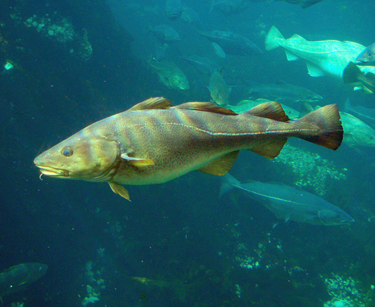 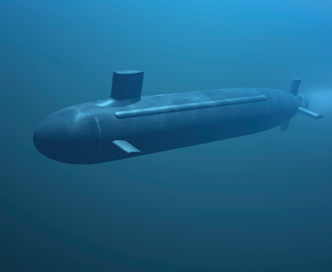 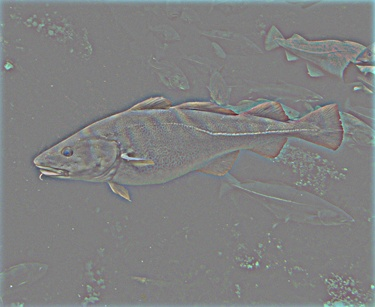 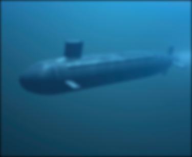 |
| 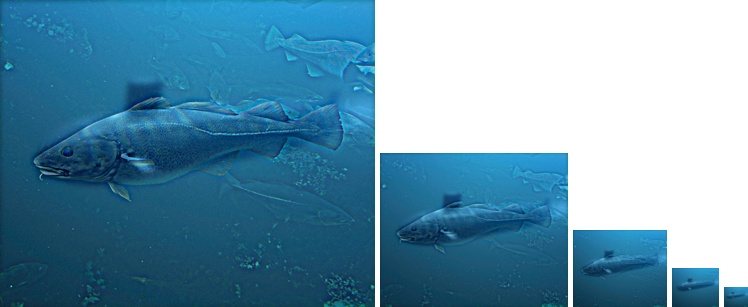 |
The cutoff frequency used for this pair was - 3. For this I had to reduce the cutoff frequency because for higher values the submarine was blurred too much because of which they were not visible even at reseanoable distances. I found the right tradeoff at 3, although the color of the fish changed, which should be expected because colors reside at lower frequences.
Marylin/Einstein


|
| 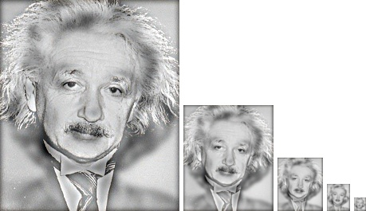 |
The cutoff frequency used for this pair was - 4. Again, I had to reduce the cutoff frequency so that Marilyn would visible at a reasonable distance. Because the images are aligned and grayscale, we don't see much of a difference in Einstein's skin tone.
Cat/Dog
(Base case)


|
| 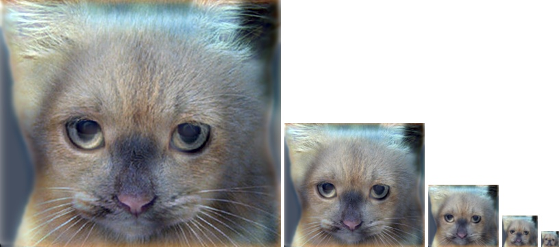 |
The cutoff frequency used for this pair was - 7. I tried changing the value of the cutoff frequency, however 7 seemed right.